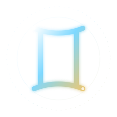
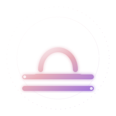

PROFIL ACTIFJulia♊ Gémeaux · Paris
98%
Une intelligence personnelle qui relie votre profil astral, vos affinités et vos prochaines destinations — dans une seule expérience.
2 847 trajectoires révélées ce mois
Calcul local & privé


INSIGHT DU JOURMercure favorise les nouveaux départs
Vos données deviennent une interface vivante, claire et actionnable.
dimensions analysées
Identité · mobilité · affinitéspays connectés
Recommandations localesprofil personnalisé
Calcul en temps réeldisponibilité
Hors ligne inclusCurieuse · Mobile · Lumineuse
Harmonieux · Créatif · Magnétique
Sélectionnez une destination et découvrez son indice d’affinité avec le profil actif.
Vos informations restent locales.
Votre roue devient interactive.
Les pays selon vos affinités.
Des recommandations actionnables.
♊ Gémeaux · Ascendant Balance
« Votre curiosité ouvre une fenêtre rare. Favorisez les échanges qui élargissent votre horizon. »
Une journée idéale pour initier.
Votre signature Air résonne avec une ville ouverte, créative et internationale.
Tout ce qu’il faut savoir sur la nouvelle expérience BonusBridge.
Le signe solaire est calculé à partir de votre date de naissance. L’ascendant proposé est une estimation locale basée sur l’heure et la ville ; une future API astronomique pourra fournir un calcul éphéméride complet.
Non. Cette version fonctionne entièrement dans votre navigateur et stocke vos profils dans le stockage local de votre appareil.
Oui. Une fois la première visite effectuée, la PWA met en cache les ressources essentielles et reste disponible sans réseau.
Le tableau de bord propose un export imprimable en PDF, un export compatible Excel et un import JSON pour restaurer vos données.
Créez votre signature en moins de deux minutes.
Commencer gratuitement ↗